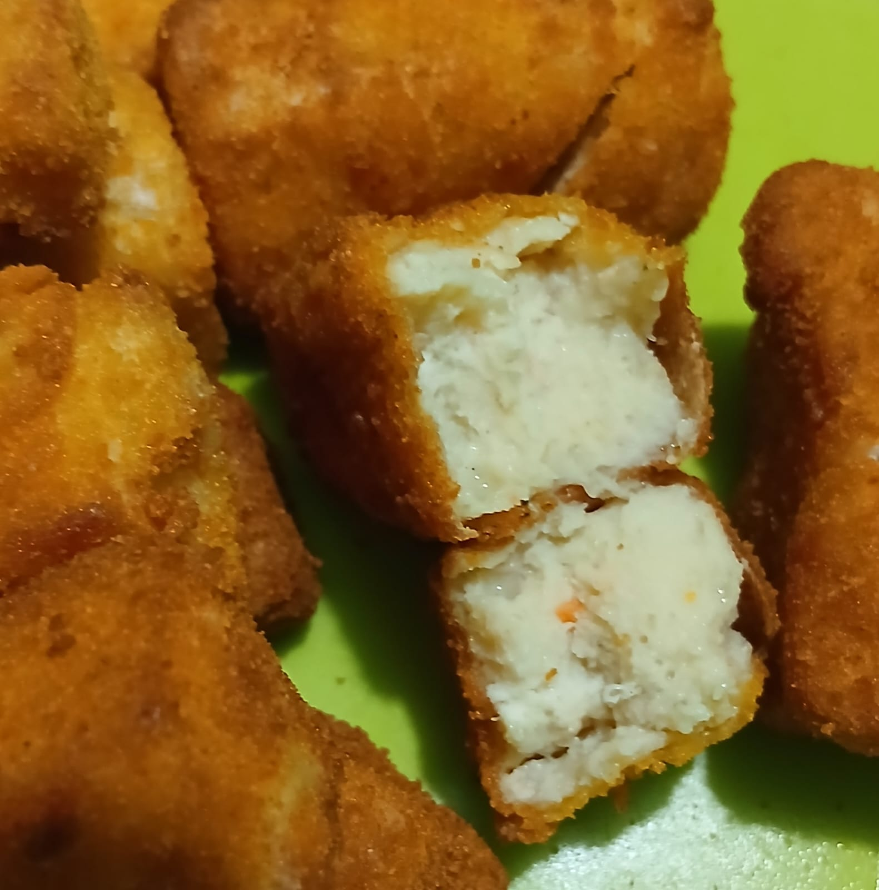
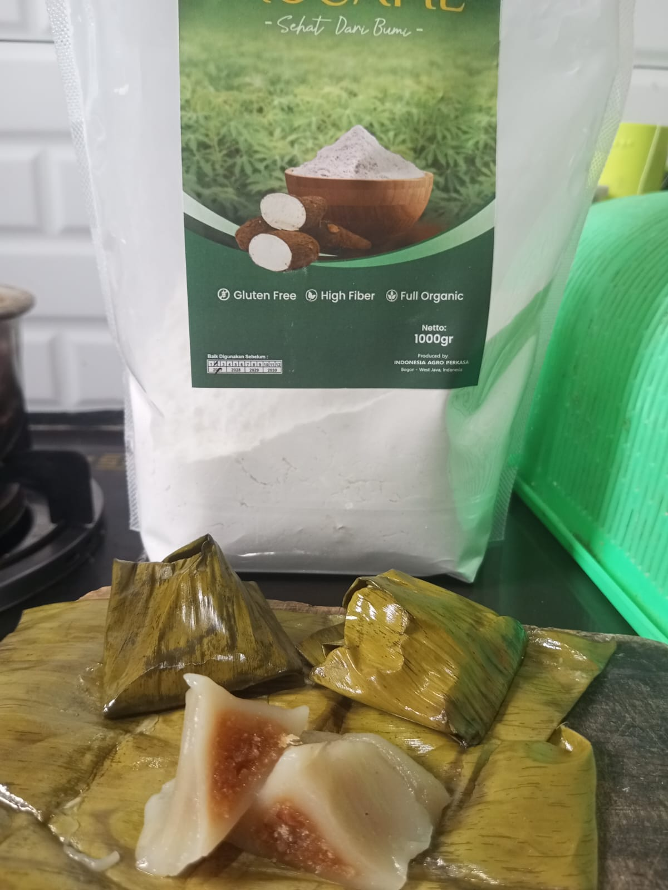

Resep Pilihan
Dapur Sehat Mocafie
Eksplorasi ragam inspirasi masakan dan kue lezat 100% bebas gluten.

Camilan
Nugget Ayam Mocafie
Pensaran dengan resep nugget ayam yang nikmat dan sehat? Pas untuk bekal keluarga, yuk cek resepnya!
45 menit
Lihat Resep

Jajanan Tradisional
Poci-Poci Pemalang Kenyal
Jajanan Nostalgia berisi karamel enten-enten yang legit, wangi, dan lumer di mulut. Lebih sehat tanpa terigu.
45 menit
Lihat Resep